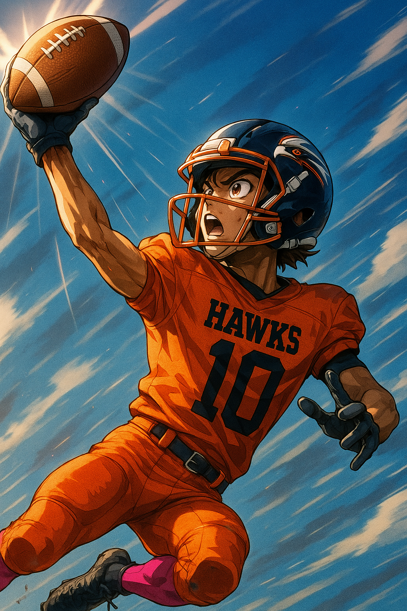
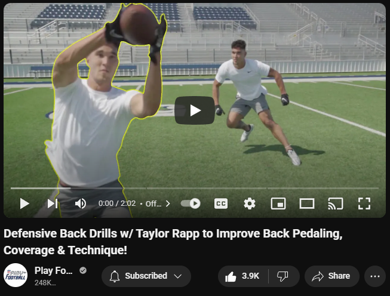

Youth Football Coaching Hub
Practical resources, drills, and strategies built for youth football coaches.
Featured Resources
Start Here
New to coaching? Learn the essentials of practice structure and youth football philosophy.
Get StartedOffensive Drills
Master the fundamentals of every position from QB mechanics to Offensive Line leverage.
View OffenseDefensive Drills
Build a sound defense with drills for tackling, coverage, and defensive line play.
View DefensePractice Planning
Structure your time effectively with our step-by-step practice templates.
Plan PracticeRecently Added Drills




Meet Coach Kyle
I'm Coach Kyle, a passionate youth football coach dedicated to helping young athletes develop skills, confidence, and character. With years of experience on the field, I've gathered the best drills and strategies to help you build a successful program.
My goal is to provide practical, easy-to-implement resources that save you time and help your players succeed.